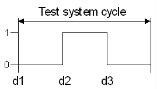
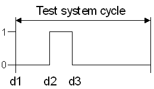
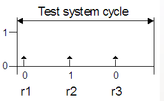

Waveform Shapes and Edge Delays
The test system applies test vectors to the DUT. A test vector consists of a drive signal for every input pin and a receive signal for every output pin. For bidirectional pins, the signal can contain both drive and receive components. The time span used for executing one test vector is called the test system cycle.
Drive waveforms
A drive signal is a waveform that is realized by certain voltage levels. A typical example of a drive waveform is:

Such a waveform can be described as an ordered sequence of actions (drive to 1 or to 0) at certain points in time within a test system cycle. These points in time are called edges; they are marked in the figure by d1, d2, and d3 ('d' for 'drive', see Selecting and ordering edges).
SmarTest supports 8 drive edges, d1 to d8.
The shape of a waveform is defined by its sequence of actions. Accordingly, the shape of the waveform in the figure above is:
Drive to 0; then drive to 1; then drive to 0 again.
This shape description abstracts from the position of the edges. Thus, for example, the following waveform has the same shape, but different edge positions:

SmarTest supports the separation between the shape of a waveform and its edge positions, which are usually called edge delays (relative to the start of the test system cycle). Shape and edge delays of a waveform are defined independently of each other in the timing setup.
The common shape of the two waveforms in the figures above is denoted in the timing setup of SmarTest as follows:
(PDW) "d1:0 d2:1 d3:0"
Such a definition is usually called a physical waveform (although it is strictly speaking only a waveform shape).
The specification of the edge delays depends on the length of the test system cycle. If, for example, the length of the test system cycle is 60 ns, the positions for the first waveform would be defined in equation based timing by
(DE1) d1=0
d2=20
d3=40
and those for the second waveform by
(DE2) d1=0
d2=15
d3=25
The numbers to the right of the equals sign specify the delay of the respective edge from the beginning of the test system cycle in ns.
Receive waveforms
Receive waveforms consist of one or more compare actions at certain points in time within a test system cycle. A compare action compares the actual state of an output pin with an expected state at a certain distance from the start of the test system cycle. Thus speaking of receive "waveforms" is a slight abuse of language, which is, however, common practice. The states are again defined in terms of voltage levels. A typical example of a receive waveform is

This receive waveform compares an output signal first with low, then with high, and then with low again. The edges for the compare actions are marked in the figure by r1, r2, and r3 ('r' for 'receive', see Selecting and ordering edges).
SmarTest supports 8 receive edges, r1 to r8.
The shape of this waveform is denoted in the timing setup of SmarTest as follows:
(PRW) "r1:L r2:H r3:L"
The edge positions for this waveform would be defined in equation based timing for a test system cycle of 60 ns by
(RE) r1=3
r2=23
r3=43
(PDW) and (PRW) are pure drive and pure receive waveforms, respectively. But as already indicated, it is possible to combine drive and compare actions in one and the same waveform for an I/O pin.
Additionally, r7 specifically, can be used for TMU measurements, see How to set up and execute a TMU measurement.
Wavetables and timing sets
Physical waveform shapes are defined in a wavetable, edge delays are defined in a timing set. The timing sets also contain the definition of the period, that is, the length of a test system cycle. Multiple timing sets can be associated with the same set of shapes so that you can change the edge positions of a waveform shape in this set by switching to another timing set. Thus, if you include (PDW) into a wavetable for a certain drive pin, you could incorporate (DE1) into timing set 1, and (DE2) into timing set 2 for this pin. Then you could switch between the two waveforms by switching to the respective timing set within one and the same test.
Functional changes
- Introduced before SmarTest 6.3.2
- SmarTest 6.5.2: Logical waveforms are no longer supported.